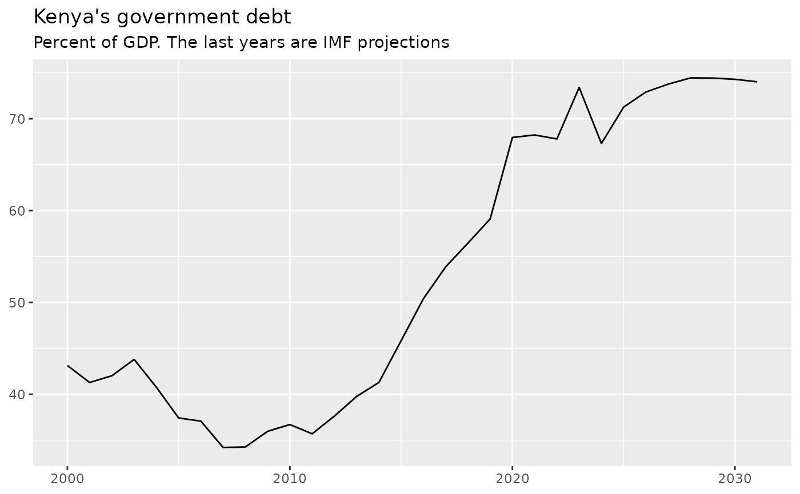

Twelve indicators from the IMF's World Economic Outlook (WEO) database of October 2026, laid out tidy. One row is one entity in one year, and each variable has its own column. An entity is one of 197 countries or one of 13 IMF country groups, and the years run from 2000 to 2031, so the panel has 6,720 rows.
Format
A tibble with 6,720 rows and 17 variables:
- code
chr The entity's code. A country has its three-letter ISO code (the IMF uses
KOSfor Kosovo andWBGfor West Bank and Gaza); an IMF group has a code that starts with G and a digit or an X, such asG110for Advanced Economies.- name
chr The entity's name, as the IMF writes it, such as "Egypt, Arab Republic of".
- year
int The year, 2000 to 2031.
- gross_debt
dbl Gross debt of the general government, everything it owes, in percent of GDP (the IMF's
GGXWDG_NGDP).- primary_balance
dbl The primary balance: revenue minus spending, with interest left out on both sides, in percent of GDP (
GGXONLB_NGDP). Negative means a deficit.- overall_balance
dbl The overall balance: revenue minus all spending, interest included, in percent of GDP (
GGXCNL_NGDP). Negative means a deficit.- gdp_usd_bn
dbl GDP at current prices, in billions of US dollars (
NGDPD).- latest_actual
int The last year with actual fiscal data; later years are IMF estimates or projections. Missing (
NA) for 12 of the 13 IMF groups.- fiscal_year
chr The months of the year the WEO shows the fiscal numbers in: "January/December" for most countries, and others such as "July/June" for Pakistan. Missing for 12 of the 13 IMF groups.
- real_gdp_growth
dbl Real GDP growth: how much more the economy produced than the year before, with inflation taken out, in percent (
NGDP_RPCH).- inflation
dbl Inflation: how much consumer prices rose on average over the year, in percent (
PCPIPCH).- unemployment_rate
dbl The unemployment rate, in percent of the labor force (
LUR). The IMF reports it for 118 of the 197 countries.- current_account_balance
dbl The current account balance: what the country earns from the rest of the world minus what it pays, in percent of GDP (
BCA_NGDPD). Negative means a deficit.- gdp_per_capita_usd
dbl GDP per person at current prices, in US dollars (
NGDPDPC). Missing for the IMF groups.- population_mn
dbl Population, in millions of people (
LP). Missing for the IMF groups.- revenue
dbl General government revenue, in percent of GDP (
GGR_NGDP).- expenditure
dbl General government spending, interest included, in percent of GDP (
GGX_NGDP). Revenue minus expenditure is the overall balance.
Source
International Monetary Fund, World Economic Outlook Database,
October 2026, https://data.imf.org/en/datasets/IMF.RES:WEO. Built by
data-raw/weo.R from data-raw/source/weo_panel.csv, which
data-raw/weo_panel.R makes from data-raw/source/weo_2026oct_extract.csv,
an extract of the IMF's workbook WEOOct2026all.xlsx, and from
data-raw/source/weo_2026oct_imfweo.csv.gz, the same release as
imfweo::weo_get() returned it.
Details
The columns cover what a student of international economics asks first: how fast an economy grows, how fast its prices rise, who has work, what it earns from and pays to the rest of the world, how its people live, and what its government takes in, spends and owes. weo_full has the IMF's other 32 indicators, and weo_indicators says what each one measures. weo_mini is twelve rows of this table that fit on one screen.
The WEO mixes actual data and IMF projections in one row. latest_actual
marks where the actual data stop. For most countries the fiscal numbers are
actual through 2025, and from 2026 on almost every value is an IMF
projection.
Net interest is not a column. It is one line of arithmetic,
primary_balance - overall_balance: the interest the government pays minus
the interest it receives, in percent of GDP. For Japan in 2025 that is
-0.511 minus -0.709, which is 0.198.
To tell a group from a country, look at the code. An IMF group's code
starts with G and then a digit or an X (G110); a country's second
character is a letter (Ghana is GHA).
Vintage
The IMF's World Economic Outlook database of October 2026. This table is a frozen snapshot of that release: it does not change when the IMF publishes a new WEO or revises these numbers.
Transformations
The first nine columns come from the IMF's workbook WEOOct2026all.xlsx, in
two steps. First, an extract stacked its Countries and Country Groups sheets,
kept 13 of 44 indicators, the years 2000 to 2031 and 9 of 29 descriptive
columns, and wrote each number in its shortest form. Second,
data-raw/weo_panel.R kept four indicators, gave them plain names, reshaped
them to one row per entity and year, and rounded them to three decimals. It
also added two columns from the IMF's labels. fiscal_year is the IMF's own
label. latest_actual turns the IMF's label, such as FY2024/25, into one
calendar year, following the rule in the IMF's notes for that country.
The last eight columns, added in version 0.3.0, come from the same release
downloaded with the imfweo
package, given plain names and rounded to three decimals. data-raw/weo.R
checks the download against the workbook, cell by cell, for every indicator
they share: no number differs. It also checks that revenue minus
expenditure equals the overall balance for every country and year, to
rounding. No value in the first nine columns changed.
Credit
Print this line under every chart you make from these data:
Source: International Monetary Fund, World Economic Outlook Database, October 2026, https://data.imf.org/en/datasets/IMF.RES:WEO. Country groups: The World Bank: World Development Indicators: country and lending groups (CC BY 4.0). Net interest is the primary balance minus the overall balance, calculated for this workshop.
Drop the second sentence if your chart uses no World Bank groups, and the third if it shows no net interest.
Terms of use
The package's MIT license does not cover these data. They are under the special
terms for statistical data on the IMF's Copyright and Usage page,
https://www.imf.org/en/About/copyright-and-terms (effective 11 October 2024,
read on 6 November 2026), which name the World Economic Outlook database. You
may download, extract, copy, build on, publish and distribute the data if you
credit the IMF in the form above, do not alter the data in a way that
intentionally affects their nature or accuracy, and say so next to the credit
when you materially transform them. If you pass the data on, make reasonable
efforts to tell your users about these terms. The IMF gives no warranty. For any
potential commercial reuse, ask copyright@imf.org first. The IMF's general
terms still apply where the data terms are silent: imply no endorsement, and do
not use its content to train large language models without its explicit
permission. See system.file("LICENSE-data.md", package = "saisdata").
This package is not an official IMF or World Bank product.
See also
weo_mini for twelve rows of this table that fit on one screen; weo_full for all 44 of the IMF's indicators, and weo_indicators for what each one measures; weo_groups for the IMF's own layout of its two big groups; wb_groups to add the World Bank's income levels and regions.
Examples
library(tidyverse) # load the tidyverse: dplyr, ggplot2, tidyr and more
# Every column, with its type and its first values
glimpse(weo)
#> Rows: 6,720
#> Columns: 17
#> $ code <chr> "AND", "AND", "AND", "AND", "AND", "AND", "AND…
#> $ name <chr> "Andorra, Principality of", "Andorra, Principa…
#> $ year <int> 2000, 2001, 2002, 2003, 2004, 2005, 2006, 2007…
#> $ gross_debt <dbl> NA, 15.774, 15.266, 15.163, 15.105, 14.760, 17…
#> $ primary_balance <dbl> NA, 1.475, 1.676, 2.273, 2.430, 0.268, -0.994,…
#> $ overall_balance <dbl> NA, 0.658, 0.978, 1.764, 1.855, -0.081, -1.436…
#> $ gdp_usd_bn <dbl> 1.429, 1.547, 1.758, 2.362, 2.896, 3.158, 3.45…
#> $ latest_actual <int> 2025, 2025, 2025, 2025, 2025, 2025, 2025, 2025…
#> $ fiscal_year <chr> "January/December", "January/December", "Janua…
#> $ real_gdp_growth <dbl> NA, 8.119, 4.546, 8.694, 8.136, 5.398, 4.809, …
#> $ inflation <dbl> NA, NA, 3.127, 3.056, 2.907, 3.526, 3.682, 2.6…
#> $ unemployment_rate <dbl> NA, NA, NA, NA, NA, NA, NA, NA, NA, NA, 3.000,…
#> $ current_account_balance <dbl> NA, NA, NA, NA, NA, NA, NA, NA, NA, NA, NA, NA…
#> $ gdp_per_capita_usd <dbl> NA, NA, NA, NA, NA, NA, NA, NA, NA, NA, 49030.…
#> $ population_mn <dbl> NA, NA, NA, NA, NA, NA, NA, NA, NA, NA, 0.070,…
#> $ revenue <dbl> NA, 27.362, 25.977, 25.980, 25.545, 23.305, 23…
#> $ expenditure <dbl> NA, 26.704, 25.000, 24.216, 23.690, 23.387, 25…
# Kenya since 2020, with its net interest bill in percent of GDP
weo |> # start with the panel, and then
filter(code == "KEN", year >= 2020) |> # keep Kenya from 2020 on, and then
filter(year <= 2025) |> # stop at 2025, and then
mutate( # add a column:
net_interest = primary_balance - overall_balance # net interest
) |> # and then
select(year, gross_debt, net_interest) # keep the columns to read
#> # A tibble: 6 × 3
#> year gross_debt net_interest
#> <int> <dbl> <dbl>
#> 1 2020 68.0 3.93
#> 2 2021 68.2 4.09
#> 3 2022 67.8 4.37
#> 4 2023 73.4 4.79
#> 5 2024 67.3 5.25
#> 6 2025 71.3 5.45
# Growth and inflation in the same years, for a few countries
weo |> # start with the panel, and then
filter(code %in% c("KEN", "GHA", "NGA")) |> # keep a few countries
filter(year >= 2022, year <= 2025) |> # and a few years, and then
select(name, year, real_gdp_growth, inflation) # keep the columns to read
#> # A tibble: 12 × 4
#> name year real_gdp_growth inflation
#> <chr> <int> <dbl> <dbl>
#> 1 Ghana 2022 3.82 31.9
#> 2 Ghana 2023 3.13 39.2
#> 3 Ghana 2024 5.85 22.9
#> 4 Ghana 2025 5.95 14.2
#> 5 Kenya 2022 4.86 7.65
#> 6 Kenya 2023 5.72 7.68
#> 7 Kenya 2024 4.66 4.50
#> 8 Kenya 2025 4.63 4.07
#> 9 Nigeria 2022 4.32 18.8
#> 10 Nigeria 2023 3.32 24.7
#> 11 Nigeria 2024 4.07 33.2
#> 12 Nigeria 2025 4.01 23.0
# The typical country's debt in each year
weo |> # start with the panel, and then
filter(str_length(code) == 3) |> # keep countries, not IMF groups
group_by(year) |> # make one group per year, and then
summarize( # collapse each group to one row:
median_debt = median(gross_debt, na.rm = TRUE) # the middle value
) # close summarize()
#> # A tibble: 32 × 2
#> year median_debt
#> <int> <dbl>
#> 1 2000 53.6
#> 2 2001 52.4
#> 3 2002 53.7
#> 4 2003 49.8
#> 5 2004 46.8
#> 6 2005 43.2
#> 7 2006 36.8
#> 8 2007 32.9
#> 9 2008 33.4
#> 10 2009 36.4
#> # ℹ 22 more rows
# Kenya's debt over time, as a chart
weo |> # start with the panel, and then
filter(code == "KEN") |> # keep Kenya's rows, and then
ggplot(aes(x = year, y = gross_debt)) + # years across, debt up
geom_line() + # draw a line
labs( # add the words:
title = "Kenya's government debt", # the title
subtitle = "Percent of GDP. The last years are IMF projections", # units
x = NULL, # no x axis title
y = NULL # no y axis title
) # close labs()
